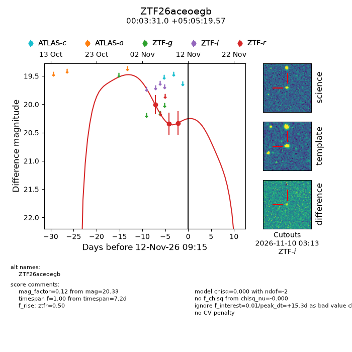
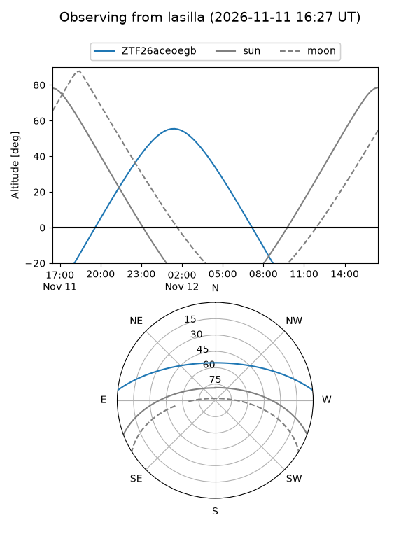
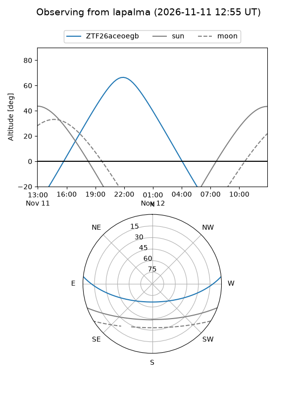
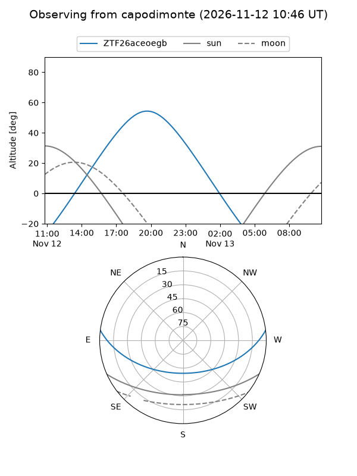
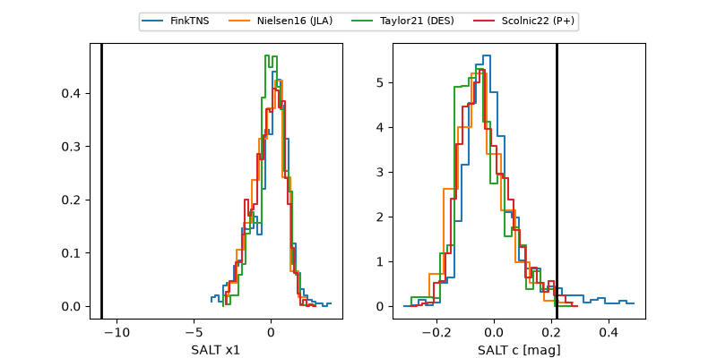

ZTF26aceoegb
Target ZTF26aceoegb at 2026-11-12 09:20
Aliases and brokers:
FINK-ZTF: ztf.fink-portal.org/ZTF26aceoegb
Lasair-ZTF: lasair-ztf.lsst.ac.uk/objects/ZTF26aceoegb
ALeRCE-ZTF: alerce.online/object/ZTF26aceoegb
Direct TNS query: direct search
alt names
ZTF26aceoegb (ztf,fink_ztf)
Coordinates:
equatorial (ra, dec) = 0.8793,+5.08877
equatorial (HMS+DMS) = 00:03:31.02,+05:05:19.57
galactic (l, b) = (101.3705,-55.76394)
Flags:
peak dt: +15.3
Photometry:
last ztfr=20.33
3 ztfr detections
Lightcurve

Visibility



Additional plots
